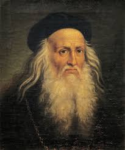
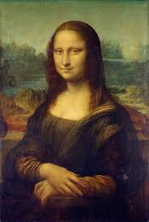
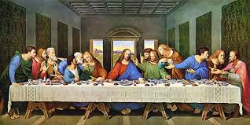

Leonardo da Vinci: The Universal Genius of the Renaissance
Leonardo da Vinci (1452–1519) is often regarded as one of the greatest minds in human history. He was not only a brilliant painter but also an engineer, inventor, scientist, architect, and philosopher. His boundless curiosity and creativity earned him the title of “Renaissance Man” or “Universal Genius.”

Early Life
Leonardo was born on April 15, 1452, in the small town of Vinci, Italy. He was the illegitimate son of Ser Piero, a wealthy notary, and Caterina, a peasant woman. From a young age, Leonardo showed an insatiable curiosity about nature, mechanics, and the world around him
Artistic Masterpieces
Mona Lisa
The MonLisa, painted by Leonardo da Vinci between 1503–1506, is one of the most iconic artworks in history. The portrait is believed to depict Lisa Gherardini, the wife of a Florentine merchant, which is why it is also known as La Gioconda.
Leonardo used his famous sfumato technique to create soft transitions of light and shadow, giving the painting its lifelike quality. The subject’s mysterious smile and gaze have fascinated viewers for centuries.
The painting was taken by Leonardo to France in 1516 and later became part of King Francis I’s collection. Today, it is displayed in the Louvre Museum in Paris, protected by bulletproof glass.
The Mona Lisa became globally famous after it was stolen in 1911 and recovered two years later. Since then, it has stood as a timeless symbol of Renaissance art and human mystery

The Last Supper
The Last Supper, painted by Leonardo da Vinci between 1495–1498, is one of the most famous murals of the Renaissance. It was created for the dining hall of the convent of Santa Maria delle Grazie in Milan, Italy.
The artwork shows the moment when Jesus announces that one of his disciples will betray him. Leonardo captured the emotions of each disciple with extraordinary detail, making the scene dramatic and lifelike.
Unlike traditional frescoes, Leonardo used an experimental technique that caused the painting to deteriorate quickly. Despite this, it remains a masterpiece of perspective and human expression.
Today, The Last Supper is preserved in Milan and admired as one of the greatest achievements in art history.

Inventor and Scientist
Leonardo filled thousands of pages of notebooks with sketches, observations, and inventions. He conceptualized machines such as a helicopter, armored tank, submarine, and even humanoid robots, centuries ahead of his time. His anatomical studies—based on dissections—produced some of the most detailed drawings of the human body ever created.
Philosophy and Legacy
For Leonardo, art and science were inseparable. He believed that understanding nature was the foundation of both beauty in art and progress in knowledge. His work bridged disciplines, embodying the spirit of the Renaissance—a period when human potential seemed limitless.
©Sharenninda kandi p